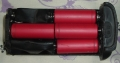

海龙县人 2014-05-21 11:15 4.81 分
操作性 4.50 功能性 4.50 美观性 5.00 趣味性 4.50 耐用性 5.00 性价比 5.00 解像力 5.00 色彩还原 5.00
总评 由尼康D2X转佳能1DS2，佳能1DS2的确是很有传奇色彩的一台机子，色彩很耐看，油韵，比起尼康D2X色彩死板发黄，我开始喜欢佳能1DS2
优点 全幅 1700像素 把玩很开心
缺点 电池太重 拍片太少 我把电池改造以后 能拍上千次以上 电池重量也减轻了不少 经过电池改造 佳能1DS2几乎没缺点了

佛途 2014-02-11 00:29
总评 2013年年中不到1万从一个从事影视策划的哥们儿那儿入了一台大兔子，编号339XXX很后期的机器。机器几乎可以说是全新的，快门1800多，全包装片纸不少，更夸张的是除了机器和电池包装，其他的配件，说明书，1394线缆等连原包装都还是原封未动的。因为太重，那哥们儿用了几次后实在受不了直接上了个M9，这机器就修养了，偶尔出来拍两张，那哥们儿有些功能居然都不太会用。本人第一次入佳能机器就是这台，总的来说对佳能的印象有相当大的改观，以前老观念总觉得佳能玩儿电子还行，玩儿光学感觉总是差点儿血统性，看来佳能经过这么多年的发展确实有长足的进步。
优点 1.画质对得起1系曾经机皇的称号，胶片感较强，白平衡很准确，色彩准确浓厚细腻，层次感清晰。
2.对焦迅速准确。
3.水晶低通对保持画质功不可没。
4.专业机身做工精细，防护性好，够结实，劲折腾，性能稳定可靠。
5.高感800以内还算纯净，实际使用中尽量不要超过400，10年前出的机器能做到这个程度已经很不易了。
6.1670万的有效像素即使到今天也是足够用的。
缺点 1.重量：确实很重，尤其用的还是镍氢电池，就更重了。
2.电池：镍氢电池重且不是太耐用，原带了两块原装镍氢电池，我还是配了两块锂电池。
3.从现在的发展来看高感算是比较低的了。当然如果追求画质太高的高感用处也不是太大。
4.不带自除尘系统，提高了保养的频度。
5.2寸屏幕确实有点儿小，看起来费劲。
6.菜单控制虽然准确，不容易造成误输入，但也比较繁琐。
7.传输标准较老，传输速度较慢。
海力布 2013-08-25 23:30 4.75 分
操作性 5.00 功能性 5.00 美观性 5.00 趣味性 5.00 耐用性 5.00 性价比 4.00 解像力 5.00 色彩还原 4.00
总评 画质凝重通透，色彩准确。性能稳定可靠，狠按了17万次快门了，从没掉过链子。对得起1系的定位。高起点的机器，放到现在依旧可圈可点。
优点 忠实可靠的工具，稳定的表现让你充满信心。
手感握持舒服，防水性能不错。
顶级的低通滤镜，通透的画质，这是5系所没有的。
高光细节好，婚纱摄影非常合适。
缺点 iso400以上画面噪点很明显了。
也许是宽容度的问题，高光细节很好。暗部成像的细节表现不好，感觉都不如5D一代。
对焦点相对还是密集在中心。
暗部对焦不给力，哪怕中心对焦点。
镍氢电池个头重电量小。
充电器庞大恐怖。
电池续航能力差。
以现在的眼光看，lcd小像素低。
equinoxmint 2013-06-10 21:34 4.13 分
操作性 4.50 功能性 4.00 美观性 3.50 趣味性 4.00 耐用性 5.00 性价比 4.00 解像力 4.00 色彩还原 4.00
总评 一台干活的机器。要说胶片味，那是1D(ISO400就是极限了)，大兔子廉颇老矣~当年的旗舰，追求这个档次的画质，兔妞是首选。
优点 1，综合性能优异
2，不会出现误操作的情况，三个按钮的组合功能都记不下来的话，请先找自己的原因。
缺点 1，高感不尽人意
2，显示屏太寒酸了，可以说几乎看不清
ggsshh 2013-06-08 17:41 4.31 分
操作性 3.50 功能性 5.00 美观性 4.50 趣味性 3.00 耐用性 5.00 性价比 4.00 解像力 4.50 色彩还原 5.00
总评 因为缺少备机，所以入了5D3，使用之后顿觉被坑：大兔2之后没买相机的正确方针没有执行下去，也促使我5年后来评下大兔2。
优点 佳能数码里面色彩和画面质感基本可以算最好了，胶片味最浓的数码单反，色彩浓而不艳。降噪算法很好，佳能自此以后为了所谓的高感降噪而牺牲画质细节的做法实不可取（那些f2.8以上的大光圈镜头自有其用武之地）。
缺点 虽然杜绝了误操作，但操控确实略显繁琐。当然，如果用它来拍高速运动，那就是自找没趣。
39° 2013-05-10 20:33 4.69 分
操作性 4.00 功能性 5.00 美观性 5.00 趣味性 4.50 耐用性 5.00 性价比 4.00 解像力 5.00 色彩还原 5.00
总评 当年上市价$7999的神机，做工精益求精，ISO800以下画质优异。
另外，存储速度并不象某些朋友说的那样慢，如果用高速卡（无论是CF还是SD），只要不持续连拍，存储速度还是不错的。RAW格式拍完1秒钟左右就可以查看。
优点 1、画质细腻，ISO800以下干净；
2、对焦强悍，即使不用USM镜头，对焦速度也当仁不让——当然了，用USM镜头还有静音的好处；
3、结实，顺便用于防身
缺点 1、电池有些不给力，当然，是相对于同时代N家机器而言
2、USB太慢，现在火线接口的电脑少了，无奈只能用读卡器，麻烦，可以考虑用带wifi功能的SD；
3、不能拍视频、屏幕小、不能LCD取景……其他朋友说得差不多了，毕竟是多年前的机器了，有情可原
2239771818 2013-05-10 08:28 4.81 分
操作性 4.50 功能性 4.50 美观性 5.00 趣味性 4.50 耐用性 5.00 性价比 5.00 解像力 5.00 色彩还原 5.00
总评 带个我感动的机体，仿佛回到第一次拿起国产旁轴胶片机的心动
优点 无出其右低感画质、无比耐操的可靠做工、无与伦比的色彩还原，我需要的大兔子都有。
出厂8年的大兔子，与我相遇这是彼此的缘分，兴许也是这台大兔的归宿。
05年卖5W的机子，现在8000能入手，还有什么好说的呢？
即使以后入了更高配的机型，大兔也不会被忘记，希望能按几十万快门，让大兔为我留下更多的感动。
缺点 重，腕力耐力差的，请勿尝试。
高感的话，对于追求画质的老胶片玩家，这问题倒是无所谓，1600ISO应急用。
存储速度没有那么不堪，不连拍的话，30m闪迪卡无太大压力。
屏幕真的小，但色彩和清晰度非常高，可以说你在屏幕上看觉得好，上了电脑会更好。
操作嘛，一天下来能熟悉啦，之后适应了即可，而且省的被人拿来看，因为别人不会用啊。
fish11 2013-05-04 13:16 4.69 分
操作性 4.00 功能性 4.00 美观性 5.00 趣味性 4.50 耐用性 5.00 性价比 5.00 解像力 5.00 色彩还原 5.00
总评 是目前性价比最高的一体机。
优点 外观 手感：个人觉得按键布局 什么的都比较有意思 比较帅气 哈，手感超出我其他机器
快门声：1DS2的快门声跟EM5 D200一样好听 而且更清脆 据说6D会更安静。5D 5D2不用说了 大部分人都知道.
取景器：1DS2取景百分百范围，构图的时候还是精确多了。
电池：1DS2的原电够拍400张 ，我换了个锂电池，某宝439元那个，不过出问题了，正准备退货返修中。
色彩：1DS2的色彩很真实 像素也很够用 出图锐利，我年前帮朋友拍全家福 放成60*120CM的照片，朋友说非常好.
操作：有点重 但1系的机子 拿手上拍摄时信心十足，很稳定的感觉，如果用5D 哐当一声下去，感觉要散架似的.
液晶屏背光灯:很有意思 是蓝色的 不像其他新机是橙色的...
ISO:以往用5D，1250可以接受 1DS2大概也差不多的样子 之前用5D2，2000能接受，感觉6D的话 3200能接受？
转接： 如果在1DS2上都能打到板的镜头 那么在5D 6D系列上更容易打板了 呵呵
双卡存储卡 防水滴 快门寿命这些不说了...
关于1DS2的传说：水晶材质的低通，ISO用PS处理后3200可用，有待证实。。。
缺点 1图像写入时间太长，拍完立即按PLAY键的话要等几秒钟，我是把屏幕回放图像的时间设置成四秒种，拍后用来立即确认图像...
2基本上你能想象到的操作都必须按两个键进行，如果说5D系列机器用3分钟能适应，那么1DS2得花5分钟才能上手，然后想在菜单，放大图像，选择图像间熟练切换，是需要花不少时间的...
3没有除尘 虽然灰尘不多，但每次装镜头都得小心翼翼...
4不能拍视频
5屏幕小 不过这个也不全是缺点 至少出去玩 别人不会拿着我的机子翻照片看不松手了 哈
阿惹 2012-12-12 17:00 4.88 分
操作性 4.50 功能性 4.50 美观性 5.00 趣味性 5.00 耐用性 5.00 性价比 5.00 解像力 5.00 色彩还原 5.00
总评 1、绝对值得信赖的好工具，画质细腻真实。
2、一流的对焦，俺的35L，50L，85L，17-40L，70-200L在这架3、相机上就不知道啥叫跑焦。
4、低iso画质无可挑剔。
5、实战在小雨中工作4小时，防水性绝对值得信赖。
6、令人放心的白平衡。
等我入手了1dx，大兔子还是不会淘汰掉的。
优点 除了缺点所有的
缺点 所谓的缺点也是以今天的眼光来看
1、屏幕，不说了，太落后了，俺已经用eye-fi替代它了。
2、高iso的表现，800以上已经觉得有点恼怒了。
3、又重又烂的镍镁电池，4块配合工作。
4、usb传输的速度，联机操作必须火线，没有读卡器就玩完。
5、闪光控制系统太老了（今天的眼光）
小乙 2012-11-28 10:42 4.5 分
操作性 4.00 功能性 4.50 美观性 5.00 趣味性 4.00 耐用性 5.00 性价比 4.50 解像力 4.50 色彩还原 4.50
总评 用7D置换了一台，当然也添了不少钱。拿在手中特别的踏实，好大一块铁，本来想等有合适的5D2的，谁知一冲动，入了大兔子。从参数上看，已经落后了。但实际使用却给人惊喜，以前没有用过1系列的机器，终于知道什么是专业机、什么是旗舰了。
优点 1、对焦领先7D太多了，因为主要是拍女儿，原先以为7D的对焦性能出众，买来用的，可是实际使用过程中，感觉到有些场景，特别因为多在室内，对焦总是不如意，现在好了，在正常灯光下，可以做到指哪打哪，看来7D所宣传的对焦系统下放是有误差的。
2、可以用双卡，因为现在的SD卡性能都提高了，加上1DS2的存储较慢，所以可以使用SD代替CF了，降低的使用成本。
3、总是让人感觉到可靠，踏实，不在怕雨雪天气，当然还是会避免直接在雨中使用的。
4、全幅。终于全幅了，从08年初买40D时对5D的垂涎，到买二手7D时的犹豫是否换对焦不是很出生的5D2，现在不再考虑了。镜头也可以不再心里有堵了，焦段转换带来的使用上的麻烦也没有不在了。
5、1系列，这个真的很牛，逼着自己多学习拍摄、多体会，提高水平。
缺点 1、重量。还是不太适应，但是这重量也带来了踏实。好在不是时时举着机器。
2、体积。什么都大，机身大，电池大，充电器更大。还好可以勉强放入新买的乐摄宝包里，挂50/1.4时，可以免费放入经常随身背的单肩包里。
3、存储。从现在的规格看，1DS2的存储速度实在有些可怜，拍内张等半天。
4、电池。那么大的电池，只能照三四百张，令人失望，不过不拍飞机托运了。但为了出门少带电池和不带那个让人恐惧的充电器，以后还是改铀吧。
5、操作。可能除了快门都要双手操作，还需要适应。菜单很简单，简单的都不想看说明书了。
6、显示屏。2寸的屏，我都不想说了。